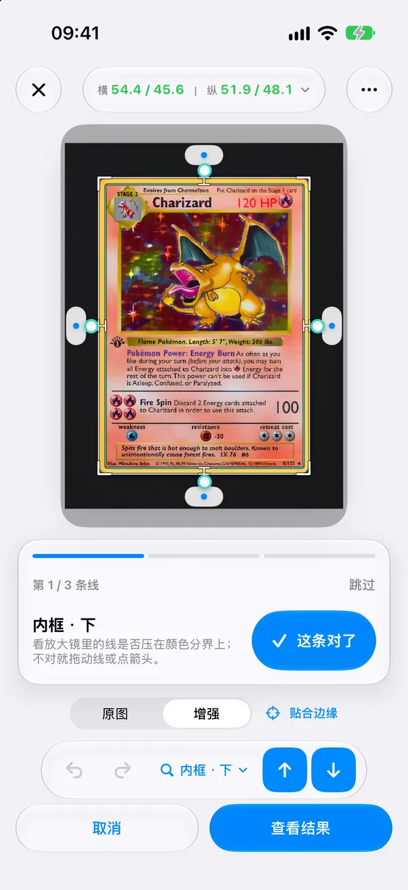
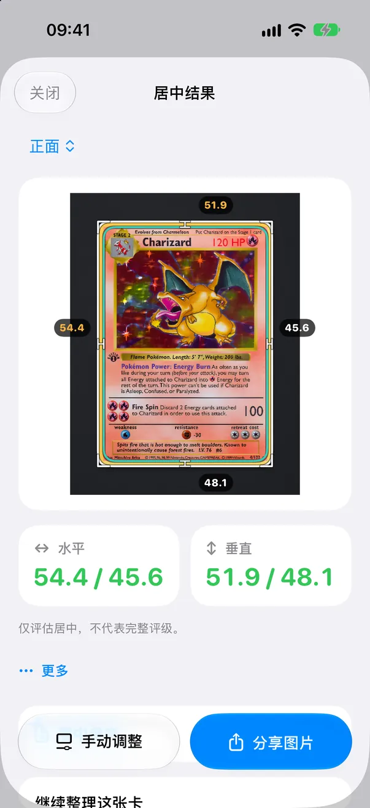
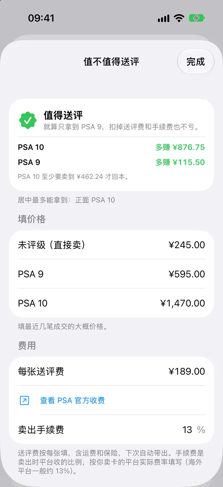
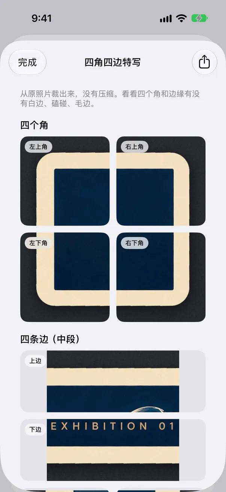
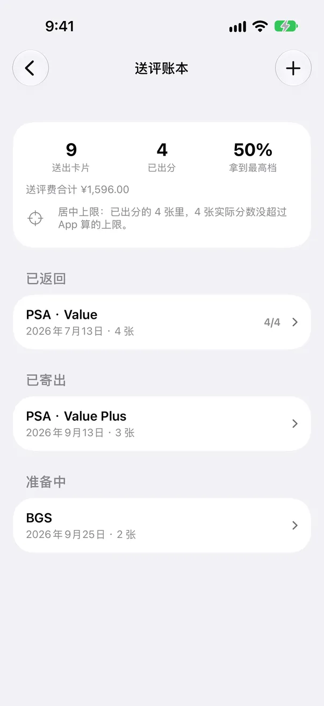
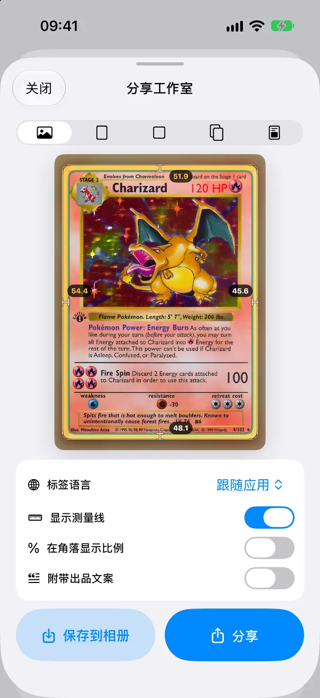

逐条对线 免费
有需要确认的线时，编辑器按“最不确定”的顺序一条条带你看。放大镜自动对准这条线，点“这条对了”进入下一条；不对就直接拖到正确位置。
告诉你为什么要检查 免费
每一步用一句话说明原因：反光、模糊、太暗、分辨率低、垫子和卡边颜色太像、没找到印刷边框等。能靠重拍解决的会直接告诉你。

先把边距测准，App 不确定的线一条条确认，再决定这张卡值不值得花送评费。
CenterMint 是一款面向集换式卡牌和球星卡收藏者的 iPhone App。它根据裸卡照片测量左右、上下的居中比例，对照 PSA、BGS、CGC 公开的居中标准，帮你在花钱送评之前做判断。它是独立工具，只测居中，不预测完整评级分数。
会提醒你哪里要再看一眼的测量
第 1 步，共 5 步
把卡从卡套里取出，平放在和卡边颜色反差明显的纯色垫子上，在均匀光线下拍照，或导入照片、扫描图。
自动测量只支持裸卡。 装在卡套、硬卡套或评级壳里的卡，需要自己手动对齐四条边。检测到卡套时，App 会提示并切换到手动对线。

第 2 步，共 5 步
CenterMint 自动给出卡牌外边和印刷内框。有不确定的线时，会用放大镜一条条带你看，并说明原因。
裸卡自动测量：金边、银边逐边亚像素贴合；在布面、花纹垫上，外框也更不容易认错。
第 3 步，共 5 步
确认或微调每一条线，左右、上下比例随时更新。
放大镜 2.0：显示真实像素、像素网格和边缘明暗曲线，对边联动，方便两侧对比。
免费版测量同样使用全分辨率原图。
第 4 步，共 5 步
背面也测一遍，正反面分别对照 PSA、BGS 或 CGC 标准。

第 5 步，共 5 步
送评前看一遍四角四边特写，再用最近的成交价算一下“值不值得送评”。
1.9 版围绕一个要花钱的决定：这张卡值不值得送评。
1.9 版新功能
有需要确认的线时，编辑器按“最不确定”的顺序一条条带你看。放大镜自动对准这条线，点“这条对了”进入下一条；不对就直接拖到正确位置。
每一步用一句话说明原因：反光、模糊、太暗、分辨率低、垫子和卡边颜色太像、没找到印刷边框等。能靠重拍解决的会直接告诉你。

填上未评级、PSA 9、PSA 10 的成交价（也支持 BGS、CGC），再填送评费和卖出手续费，App 会算出送评后比直接卖裸卡多赚还是亏多少，以及 PSA 10 至少要卖多少才回本。居中拿不到的等级会自动排除。价格由你自己填；日本地区可一键打开メルカリ、ヤフオク的已售记录。

从原照片按原清晰度裁出四个角和四条边的中段，放大查白边、磕碰，还能导出一张拼图分享。App 只负责给你看清楚，不给四角和表面打分。


从示例卡图片按原清晰度裁出的四个角和四条边。白边要你自己判断，App 不打分。

记下每次送了哪些卡、花了多少钱、回来多少分。可以看到拿满分的比例、送评费总花费，以及实际分数是否没超过 App 测出的居中上限。

分享图以卡牌照片为主，只在右下角放一个小 logo。

批量 2.0（Pro）：连拍进队列，只看需要检查的卡，按居中排序，一键保存。决策助手把卡分成“送评 / 先补齐（如背面还没测）/ 低于目标”，并能导出送评清单 PDF。
送评清单 PDF
卡落到切割垫上，外框和印刷内框被找出来，比例随之出现；偏心的那一张会被标出来。
画面里是为本页画的抽象卡。在 App 里，你测的是自己卡的照片。
Pro 有按月、按年订阅和一次性买断，方案与当地价格以 App 内显示为准。订阅会自动续订，直到你在 Apple 账户设置中取消。
测量在你的 iPhone 上完成，不需要注册账号。只有你主动同意时照片才会离开手机：纠错分享默认关闭；批量导入前会询问一次，可以拒绝。你填的价格和送评账本都只存在本机。详情见隐私政策。 隐私政策（英文）
App 支持简体中文、繁体中文、英语、日语、韩语和越南语。
自动测量只支持裸卡。卡套、硬卡套和评级壳有自己的边缘和反光，App 会把塑料边当成卡边。检测到卡套时，App 会提示并切换到手动对线，由你自己对齐四条卡边。想要最准的结果，请取出卡再重拍。
取决于照片质量和你确认的线。差别其实很小：左右各 3 毫米边的卡，从 50/50 到 55/45 只差 0.3 毫米。CenterMint 对金边、银边逐边做亚像素贴合，并标出没把握的线，但不宣称一个统一的准确率。被标出的线请用放大镜确认，模糊或反光的照片请重拍。
PSA 公布的 Gem Mint 10 参考是正面约 55/45 以内、背面 75/25 以内；PSA 9 是正面约 60/40、背面 90/10。BGS 和 CGC 有各自公布的标准，部分数值只适用于特定卡种。居中只是评分项之一，居中好也不代表一定拿高分。送评前请查看官方页面。
每个等级按“多赚 =（评级后售价 − 裸卡售价）×（1 − 卖出手续费）− 送评费”计算。无论卖裸卡还是评级卡都要付手续费，所以只对差价乘手续费。回本线是“最高档售价至少 = 裸卡售价 + 送评费 ÷（1 − 手续费）”。就算只拿到次一档（如 PSA 9）也不亏，就显示“值得送评”；只有拿到最高档才赚，就提示看四角和表面有没有把握；哪一档都不赚，或居中拿不到赚钱的等级，就显示“不建议送评”。App 不估算拿 10 分的概率。
不会。App 不接入 eBay 或任何价格服务，也不猜价格。最近的成交价由你自己填，按卡保存在本机。日本地区有按钮，可以用卡名和编号直接打开メルカリ已售、ヤフオク已成交的搜索结果。
不评判。“四角四边特写”是从原照片按原清晰度裁出四个角和四条边，让你自己放大看。手机照片可能拍不出极细的瑕疵，有疑问的地方请用放大镜在强光下再看一次。
免费：全分辨率居中测量、放大镜、逐条对线、对照 PSA/BGS/CGC 标准、一次最多 5 张的批量体验，以及任选 1 张卡试用送评前检查（值不值得送评、四角四边特写）。Pro：所有卡都能用送评前检查，外加送评账本、批量扫描、带送评清单 PDF 的决策助手、CSV 与 4K 导出、预设和去广告。
没有。CenterMint 是独立开发的 App，居中标准只是按各公司公布的标准做对照，实际评级结果可能不同。
测量在 iPhone 本机完成，不需要账号。只有你开启纠错分享（默认关闭），或在批量导入时同意那一次提示，照片才会上传，而且可以拒绝。价格和送评账本只保存在本机。